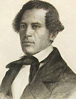
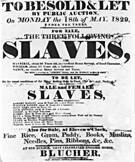

|
Slavery figured significantly in Missouri's history from the era of French and
Spanish rule and settlement in the early eighteenth century, rapidly replacing
Indians as the non-free labor force in the territory. Blacks were first brought
to Missouri to help meet the labor needs of the territory in 1719. During that
year, Sieur Philip Renault, son of the celebrated iron founder of France,
purchased about 500 blacks on the island of Santo Domingo to work as lead miners
in Missouri. Another French explorer, Des Ursins, in search of silver mines in
the territory, also imported slaves to Missouri.
In addition to mining lead, slaves in territorial Missouri labored in
diversified industries. For example, Monsieur Valet, regarded as the wealthiest
planter on the upper Mississippi in 1770, engaged his 100 black laborers in
lumbering and maize production. The maize was ground by the water-driven mill on
his Sainte Genevieve plantation located on the western bank of the Mississippi
River. Other slaves were employed in Missouri's saltworks. The salt trade was an
important factor in the commercial life of early Sainte Genevieve. Jean La
Grange, owner of La Saline saltworks until 1766, worked his ten black slaves in
the production of salt. When Daniel Blouin purchased the slaves and the
saltworks in 1766, the slaves were probably the primary labor force at the
works. During the 1770s, black slaves largely made up the population of the
vicinity of the saltworks. Documents also indicate that black slaves cultivated
the lands in the vicinity of the saltworks.

Missouri, as a border state, constantly contended
with runaway slaves.
|
Because profitable uses were found for black slaves in Missouri, and because
of the fertile valleys of the Mississippi and Missouri rivers, slaveholders and
settlers who expected to own slaves were attracted to the territory and state.
The first American emigrants, largely Southerners, brought to Missouri not only
their livestock and other personal property, but their black slaves as well.
When the first big wave of Southern Americans began to rush into Missouri after
the Louisiana Purchase of 1803, they found the best land along the rivers
already occupied. The older settlers, however, readily sold their landholdings
to the newcomers for a few dollars. These land transfers enabled the slavery
economy of the Missouri Territory and later state to develop in the river
valleys.
The second big wave of Southerners to enter Missouri followed the War of
1812. The years between 1815 and 1825 constituted the period of the most
intensive migration of American fortune seekers to Missouri. During this period
slaveholders from both the upper and lower South began to dominate the economic
and social affairs of the territory and frontier state. According to one keen
observer of the evolution of Missouri's society, "nearly all of the first
settlers [during the 1815-1825 period] owned negro slaves."
A study of the growth of Missouri's population between 1803 and 1860 provides
insights concerning the demand for slave labor during both the territorial and
statehood years. The percent of slaves in the total population showed a steady
increase from 1803 to 1830. Until 1830 the percentage increase of the slave
population started to decline in ratio to the percentage of white inhabitants.
Nevertheless, these statistics must not be construed to mean that by 1830, or
1860 for that matter, slavery in Missouri had reached its natural limits of
expansion. During the 1840s and 1850s, non-slaveholding Germans and Irish came to
the state in droves to escape conditions in their native lands. Other
developments in Missouri also lead to the conclusion that slavery was not dying
in Missouri by 1860.
Furthermore, a careful study of federal census data for Missouri for the
years 1850 and 1860 reveals a significant pattern. The Missouri River counties,
from Callaway County west to the Kansas border, showed substantial growth in
slave population during the decade, while several of the counties in the eastern
section of the state from St. Louis southward along the Mississippi River,
witnessed either a decline in their slave populations or a relatively small
increase. Slaveholders in Callaway County, located in east central Missouri, for
example, represented roughly 50 percent of the state's slaveholding families in
1850. During the 1850s, when slaves brought very high prices in the lower South,
the slave population of Missouri increased 24 percent.
In 1860 Missouri ranked eleventh among the slave states and the District of
Columbia. According to the federal census, the average number of slaves per
slaveholding family in the state in 1850 was 4.6, or about one-half of the
national average. Of the 19,185 slaveholding families in 1850, 12,604 or 65.6
percent of them held less than five slaves. One slaveholding family, however,
was listed as owning at least 200 bondsmen. By 1860 the number of slave owners
in Missouri had increased to 24,320, and the average number of slaves per owner
had increased to 4.7.
During the antebellum era, St. Louis was Missouri's largest urban center. The
border city was first settled by French traders about 1764. The growth of the
settlement, situated along two great rivers, was influenced by imperial
commercial activities and the coming of the steamboat. Although the slave
population witnessed a decline of more than 1,100 persons between 1850 and 1860,
the number of bondsmen in the city in 1860 was eleven more than the number for
1840. Nevertheless, the slave population of St. Louis declined from about 9
percent of the city's total number of residents in 1840 to about 1 percent
twenty years later.
The increased number of free blacks in St. Louis in 1860 does not suggest
that the 1,114 fewer slaves in the city's population were freed, hence
increasing the free black population. The increase of free black residents from
1,398 in 1850 to 1,755 by 1860 "was not more than the natural increase," noted
historian Frederic Bancroft in 1931. Federal census figures show that only 139
slaves were manumitted in the whole state between 1840 and 1860. Evidently the
slave population in St. Louis was not becoming freer as the nation was drawn
closer to civil war.
|

William Wells Brown
|
Several factors contributed to the declining slave population in St. Louis
during the 1850s. The slave-trading business in the city during the decade only
partly explains the situation. Bancroft asserted in 1931 that the frontier town
was "one of the six cities that sent the most negroes to the insatiable
'Southern Market.'" Undoubtedly some of St. Louis's slaves were sold "down the
river," but the number sold rarely included prime field hands. In 1860 St. Louis
County had 4,346 slaves. Of that number 3,605, or about 83 percent, were under
forty years of age. Before his escape from bondage in St. Louis in 1835, William
Wells Brown was hired out for a year to "Mr. Walker," a slave dealer. In his
autobiography Brown wrote, "I am sure that some of those who purchased slaves of
Mr. Walker were dreadfully cheated, especially in the ages of the slaves which
they bought." Doubtlessly, Walker was typical of the slave trader in St. Louis.
Moreover, in 1861 slave auctions in St. Louis were abruptly halted by a crowd
of about 2,000 young white men who dominated bidding in January with what were
deemed ridiculously low bids, thereby forcing the auction to stop. St. Louis
never again held slave auctions. The rush for gold in California also affected
the slave population in St. Louis as well as the whole state. Jesse Hubbard, a
St. Louis slave, accompanied his master to California and returned with $15,000.
Upon his return to St. Louis, Hubbard purchased his freedom and bought a farm in
St. Louis County. Regarding St. Louis City and County, J. Thomas Scharf
maintained that a large proportion of the emigrants to California were men of
substance, including farmers, mechanics and merchants, classes well-represented
among slave owners.
Missouri's emancipation movement, starting in St. Louis during the 1850s,
also worked to undermine slavery in the river city. A group of St. Louis
politicians, who were known as radicals, advocated emancipation and subsequent
colonization of Missouri's slaves. The battle cry of the movement was voiced by
one of its leaders in a March 1857 speech in St. Louis. Benjamin G. Brown, an
astute lawyer and state representative, explained the philosophy of the emerging
movement in these words: "Agitate the emancipation of slaves? No! Let us agitate
the emancipation of ourselves--our brothers and sisters--our children and those
who are come after us, from competition with serfdom, and conflict with
bondsmen, and bondswomen." This movement on behalf of the white laboring class
in Missouri probably proved more successful in controlling the growth of slavery
in St. Louis than in any other part of the state. Aided by this white labor
movement, many of the black slave domestic workers in St. Louis were replaced by
unskilled Germans and Irishmen who had migrated to St. Louis in droves during
the late 1830s and after. Nevertheless, a St. Louis clergyman observed that as
late as 1860, the proslavery spirit remained very much alive. Although he noted
that many businessmen recognized the debilitating impact slavery had upon the
city's business interest, clergyman Galusha Anderson insisted that the advocates
of slavocracy still remained firmly in control. The defenders of black slavery
in St. Louis, wrote Anderson, controlled the entire city as late as 1860. Thus,
as historian Claudia Dale Goldin found, "slavery and Southern cities were not
incompatible during the period 1820-1860." Slavery was slavery in St. Louis
until it was abolished by state law in 1865. Above all, slavery in Missouri was
an important economic system. Missouri's slaveholders, as one contemporary of
Marion County remarked, "worked their slaves for profit. Slavery to them was not
only social power and supremacy, but it was wealth and a source of wealth...
Men and women worked in the fields here, as they did in the cotton fields of
Mississippi." Foremost in the minds of Missouri's slaveholders was wealth, and
the labor needs of the frontier state caused slaves to be valuable investments.
Doubtlessly, the largest number of slaves in Missouri during the antebellum
era served as agricultural laborers in the state's chief cash products, hemp,
tobacco, and livestock. During the statehood period, the vast majority of
Missouri slaves were employed in the production of hemp. In 1850, for example,
those counties that proportionally had the largest number of slaves were the
state's largest hemp, tobacco, and livestock producing counties. Accounting for
34 of the state's 101 counties, in 1850 these counties produced 13,216 of the
state's 16,028 pounds of hemp, 1,859,115 of 3,523,632 head of livestock, and
15,218,721 of 17,113,784 pounds of tobacco. For the general farmer as well as
for those who engaged their slaves in the cultivation of hemp, tobacco, and
raising livestock, Missouri by the 1840s was a "new agriculture paradise,"
according to a North Carolinian who moved to Jackson County in western Missouri
in 1842. Throughout the slavery era, black slaves fulfilled the multifaceted
duties of farmhands.
Missouri's slaves also were used extensively as domestic servants. Before the
1850s only a few of the household servants in St. Louis were not slaves. Black
slaves were engaged on a large scale as servants in households throughout the
state. Christian College, a women's school located in Columbia, employed female
slaves to work as cooks, washwomen, and servants to the students. The
institution also permitted families to contribute the labor of their slaves in
lieu of tuition. In 1860 another school, Saint Louis University, employed six
slaves as domestic servants.
Moreover, the continued labor needs of the lead mines of Missouri and
Illinois added to the economic significance of slavery in Missouri. The Maramec
Iron Works of Missouri, according to one scholar, "quickly resorted to slave
labor for the difficult but routine tasks of mining ore, quarrying flux, and
chopping timber." From 1828 until the Civil War the company regularly used
between fifteen and twenty-five slaves, both hired slaves and those owned by the
firm. Among the slave mine laborers were blacksmiths, carpenters, and furnace
keepers.
|

An announcement of a slave auction in Missouri
|
Missouri's bondsmen also were engaged in a variety of other occupations, both
skilled and unskilled. Slaves were used in forestry industries and in tobacco
and cotton cultivation as well. Although cotton never became a major crop in
Missouri, it nevertheless flourished with slave labor in some of the more
southern counties of the state. Slaves also labored in the construction of
railroads and served widely aboard steamboats in all capacities. Many slaves
labored in Missouri's brickyards.
Many of Missouri's businesspeople owned slaves, and evidence suggests that
most of the non-free blacks were used for nonagricultural purposes. These slaves
quite often were hired out or employed as saddle shop workers, blacksmiths,
shoemakers, and in other occupations. These slaves were used to enhance their
masters' social status as well as to supplement their masters' family income.
The early and steady hiring practices in Missouri indicated how valuable
slaves were as investments and for helping to meet labor needs in the state.
Slaves always could be hired out in antebellum Missouri, and their labor brought
comfortable sums to masters. Throughout the antebellum period, farmers,
industrialists, and merchants competed to hire surplus slaves. Because of the
state's labor needs and the profits from slave hire, domestic and interstate
slave traders doing business in pre-Civil War Missouri found it hard to purchase
good-quality slaves in the state. These factors made Missouri something less
than a buyer's market for the frontier slave trader. According to a student of
slavery in Boone County, a large number of Missouri's slaveholders "found it
quite profitable and preferable to hire their excess slaves rather than to sell
them."
Although it is difficult to determine the value of Missouri's human property
during the slavery era, historian Harrison A. Trexler correctly observed in 1914
that "in general it can be said that a gradual rise in slave values is apparent
[in Missouri] up to the Civil War." In his inaugural address of January 3, 1861,
Governor Claiborne F. Jackson estimated the slaves in Missouri to be worth $100
million. In 1862 Congressman John W. Noell of Bollinger County introduced a bill
in the House of Representatives to compensate Missouri's slaveholders $10
million for their total slave property. A year later the state auditor reported
73,811 slaves in 67 of the state's 113 counties were appraised for tax purposes
at $11,704,809. Using the governor's figures, one can conclude that in 1861 the
average Missouri slave was valued at about $700. Two years later a slave in
Missouri was still valued at more than $150. While the governor's estimate was
probably too high, the tax assessor's valuation too low, and Congressman Noell
probably was uninformed of the value of slaves in his state, Missouri's slave
property nonetheless was quite valuable socially as well as economically on the
eve of the Civil War. A slave's real worth was determined not only by his
monetary value because a bondsman gave his master a social status that could not
be measured in terms of dollars and cents.
The slaves of Missouri provided not only the labor system upon which the
economy was built, but the foundation of the state's social order as well. The
numerical ratio between slaveholder and non-slaveholder in Missouri always was
very wide. Though seven out of eight white Missouri families never owned slaves,
the authors of a recent study conclude that "whites of all classes were
encouraged to believe that they would some day enhance their social status by
becoming slaveowners."
Although few white Missourians depended directly on slavery for their
economic livelihood, nevertheless a large number of the outright defenders of
slavery were non-slaveholders. Proslavery non-slaveholders held considerable
political and social power in even so small a slaveholding area as Cole County.
As one prominent Missourian remarked, it seemed that "slavery had been woven
into the warp and woof of the social web." Slavery's social significance in
Missouri helps to explain why the institution survived so long in the state and
why it was not dying on the eve of the American Civil War. Socially as well as
economically, slavery was alive and doing well in Missouri in 1860.
Indeed, after more than one and a half centuries of slavery in Missouri,
there was no substantial evidence to indicate that the peculiar institution was
breaking down anywhere in the state by 1860. Black slaves, integrated into
almost every phase of the state's economy, showed that they could be employed
profitably in a variety of labor pursuits. The elasticity of the demands for
slave labor in Missouri and the versatility of the slave gave lasting viability
to the peculiar institution in the territory and state. Not until January 11,
1865, when Missouri's governor signed into law the Ordinance of Emancipation,
was slavery in Missouri abolished.
Source: Randall M. Miller and John David Smith, eds. Dictionary of
Afro-American Slavery (Westport, CT: Praeger, 1997), 496-503.
|